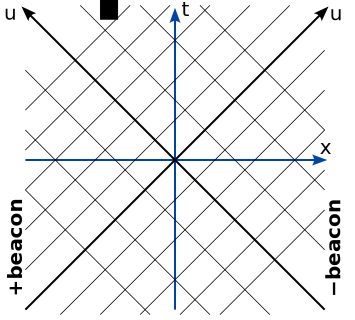
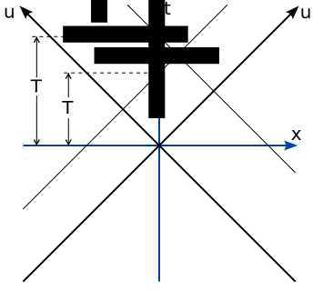
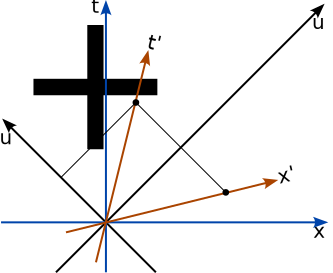

Understanding Spacetime Geometry
Things just will not go faster than light
The fact that nothing can move faster than light - the centerpiece Einstein's special theory of relativity - is hard to fathom. To our intuition, based on senses unable to detect any motion remotely as fast as light, it seems absurd. Worse, it directly contradicts Newton's cherished laws of mechanics. Yet the truth is that space and time are connected in a very beautiful and completely unexpected way by the speed of light. Spacetime has a geometry with all the richness of Euclidean geometry, where time is a new direction analogous to the familiar directions in space. But before we discuss all that, we need to address the elephant in the room: the seemingly impossible fact that nothing can move faster than light.
The reason anyone believes this is simple: When you do experiments with equipment built to measure very high speed motion you find that no matter how long and hard you push on them, things just will not go faster than light. The speed of light is extravagantly faster than anything any animal can sense. Light reaches the Moon in a bit over a second, and if bent into a circle a light pulse would complete the Earth's orbit around the Sun in 52 minutes. The only objects we can accelerate to light-like speeds are subatomic particles, so the most direct experimental evidence that nothing can move faster than light comes from particle accelerators.
A proton accelerator uses magnets to force the protons to orbit around a large ring. By applying an electric field each time a proton (a bunch of protons in practice) passes a given position in the ring, you can give it more and more momentum (applying a force to anything means changing its momentum). At first, the protons move around the ring faster and faster as you expect. But as they approach the speed of light, they don't go around the ring any faster. Their momentum continues to increase, however, as you can measure from the recoil when they hit something. You can increase the proton momentum and kinetic energy indefinitely as its speed inches closer to the speed of light, contradicting Newton's laws of motion and, incidentally, your intuition.
Light is a wave that propagates through empty space
Maxwell pictured light as an electromagnetic wave propagating through some “aether” filling all space, analogous to the way a sound wave propagates through a material. The stiffness and mass of the material determine the speed of the sound waves. For electromagnetic waves, electrical inductance and capacitance play the roles of mass and stiffness to determine the speed of light. Using Maxwell's equations you can calculate the speed of light, without directly measuring it, from the inductance and capacitance of empty space. The fact that this indirect calculation exactly matches the measured speed of light convinced everyone that light is an electromagnetic wave in the first place.
Every kind of wave propagates at its wave speed relative to the medium that supports the vibrations. For example, sound waves in air travel slower upwind than downwind - the speed of the air subtracts or adds to the speed of the sound waves. Physicists, most famously Michelson and Morely, designed rather subtle optical experiments to detect the motion of the Earth relative to the presumed aether. All such experiments came up empty handed - there is no change in the speed of light depending on its direction, or on the direction the Earth is moving through space.
There is no aether wind, so no longer any reason to imagine aether exists at all. Space is empty: You can't tell if you are moving through space - there's never any wind in your face. And crucially if two observers are moving relative to each other, neither can detect any wind or any indication they are moving through space. This is a real crisis for understanding the nature of light: Light is a wave that propagates through empty space. How does that make sense?
Unlike sound waves, light waves always move at the same speed in every direction, no matter how fast or in what direction you (as an observer) are moving. This experimental fact would have shocked Maxwell: The final sentence of his massive Treatise On Electricity and Magnetism, his epitome of his own seminal masterwork, reads:
Hence all these theories lead to the conception of a medium in which the propagation [of light] takes place, and if we admit this medium as an hypothesis, I think it ought to occupy a prominent place in our investigations, and that we ought to endeavor to construct a mental representation of all the details of its action, and this has been my constant aim in this treatise.But apparently Maxwell's hypothesis is wrong: There is no medium for light waves.
A spacetime analog of graph paper
This constancy of the speed of light through empty space, at first glance so strange, is the key to discovering the wonderful geometry fusing space and time into spacetime. The experimental results about high speed motion and the behavior of light waves turn out to make perfect sense, once you understand the behavior of moving clocks. That is, you need to work out how the spacetime coordinates $(x,t)$ assigned to any event by one observer are related to the coordinates $(x',t')$ assigned to the same event by a moving observer.
Finding the spatial coordinates $(x,y)$ of a landmark so you can plot its position on a map is the job of a surveyor. The actual measurements the surveyor makes are angles; only after considerable calculations do these angles become simple coordinates $(x,y)$ of the map. That is, in real life, coordinates of an object are not just given, but require considerable work to determine in each specific case. In order to survey spacetime accurately enough to describe motions near light-speed, you will also need to do some calculation: You need to correct the times you see things happen for the transit time of the light or other signal you use to detect the event. (Roemer first noticed this in the seventeenth century trying to understand the motion of the moons of Jupiter.)
One good way to survey the spacetime plane is to use two beacons at some great distance - one at large positive $x$ and one at large negative $x.$ Each beacon emits a series of light pulses at some rate; the rates do not need to be equal, but the interval between pulses from either beacon should be fixed. Imagine the beacons are two pulsars ticking away with their fantastic precision. You know by experiment the speed of light $c$ is the same for every pulse and for any observer. Since the two beacons lie in opposite directions, the pulse trajectories weave a tilted grid in a spacetime diagram. The slopes of the grid lines are always $\pm 1/c$ for any observer.
Thus two beacons emitting light pulses naturally define a coordinate grid in the spacetime between them - a spacetime analog of graph paper in the Euclidean plane! Unfortunately this so-called null coordinate system is not the space and time coordinates $(x,t)$ you need to understand - like any survey technique some calculation is unavoidable. Other than that, this grid of light pulses is great. To use it, you simply define one pulse crossing event as your coordinate origin, and count the pulses from either direction to get the null coordinates $(u_+,u_-)$ of any other crossing event in the grid, just like using graph paper. The huge advantage of these null coordinates is that every observer, no matter how they are moving, must agree on the number of pulses from each beacon $(u_+,u_-)$ separating any two events in spacetime.
Invariance of speed of light contradicts absolute time
Although any observer, no matter how they are moving, can locate an event in this pulsar beacon grid just by counting the pulses from each beacon, you need to do a bit of calculation - again like any surveyor - to convert those pulse counts into position and time coordinates.
If $T_+$ is the interval between pulses for the beacon on the left, and $T_-$ is the interval between pulses for the beacon on the right, then the equations for grid lines of $u_+$th rightward pulse and of the $u_-$th leftward pulse are: \begin{equation}\begin{array}{rcl} t - x/c &=& T_+ u_+ \\ t + x/c &=& T_- u_- \end{array}\end{equation} The surveying calculations to convert beacon grid coordinates $(u_+,u_-)$ into position and time coordinates $(x,t)$ are therefore: \begin{equation}\begin{array}{rcl} x/c &=& (T_-u_- - T_+u_+)/2 \\ t &=& (T_-u_- + T_+u_+)/2 \end{array}\end{equation}
You have set the beacon coordinate origin to a particular pulse crossing where $u_+=u_-=0.$ The points the observer considers to happen at the same point in space as this origin event are the points where $x=0,$ which are the line where $u_+/u_-=T_-/T_+$ in the beacon coordinates according to equations (2).
Consider now a second observer who moves from left to right with a speed $v$ as measured by the first observer. This moving observer sees the leftward pulses spaced by a shorter interval $T'_-$ and the rightward pulses by a longer interval $T'_+$ than the first observer. The grid line equations in $(x',t')$ coordinates are exactly the same as (1), but with primed position and time and $T'_\pm$ pulse intervals. Thus, the line where $x'=0$ is where $u_+/u_-=T'_-/T'_+$ in beacon coordinates, and of course where $x=vt$ in the coordinates of the first observer. Substituting $x=vt$ into equations (1) and taking their ratio, and putting $u_+/u_-=T'_-/T'_+$, you find the relation between the ratio of pulse intervals experienced by the two observers: \begin{equation} \frac{T'_+}{T'_-} = \frac{1+v/c}{1-v/c}\frac{T_+}{T_-}. \end{equation} At $x'=0$ the primed versions of equations (1) do not depend on the pulse speed $c$, so equation (3) is how the ratio of pulse intervals changes as a function of observer velocity for any kind of pulses that move at the same speed $c$ in both directions for the first observer - light, sound, or even a catapult throwing rocks could be your beacons. Newton would have arrived at this formula, with the stipulation that $c$ is the pulse speed measured by the stationary observer.
The special feature of light waves, that they always appear to travel in every direction at speed $c,$ finally comes into play when you work out what events the two observers consider simultaneous. The events which are simultaneous with $(0,0)$ are where $t=0$ according to the first observer, but where $t'=0$ according to the second. Plugging $t'=0$ into the primed version of equations (1) gives $u_+/u_-=-T'_-/T'_+,$ the negative of the beacon coordinate equation for $x'=0.$ When you substitute this into equations (2), you just reverse the signs of the second terms on the right hand sides relative to the $x'=0$ case. Therefore, the ratio of equations (2) where $t'=0$ is the reciprocal of what it was where $x'=0$: \begin{equation} ct/x=v/c. \end{equation} The points with $t'=0$ are not simultaneous for the first observer: $t$ depends on $x$!
Another way to say the same thing is to note that if $t'=0$ passes through $(u_+,u_-),$ then $x'=0$ must pass through $(-u_+,u_-).$ This reflection symmetry of the position and time axes with respect to the beacon coordinate grid is the only way the speed of light can have the same fixed value $c$ for every moving observer. In the position-time corodinates of one observer, it means that the slopes of the world line and line of simultaneity of a second observer must be reciprocals as in equation (4).
This is the revolutionary feature of special relativity: Simultaneity is no longer absolute, but depends on the motion of the observer. All of the things that seem strange about relativistic mechanics trace back to this one fact: You intuitively expect that events at different places which are simultaneous for one observer will be simultaneous for all observers. But the cold experimental fact is that simultaneity is relative. Newton's model of absolute time is inconsistent with the invariance of the speed of light.
A geometrical way to think about what you've just discovered is this:
Invariance of area and the spacetime interval
You cannot get any farther using only the experimental fact that the speed of light is the same in all directions no matter how you are moving through space. To completely specify $(x',t')$ in terms of $(x,t),$ you need to know how each pulse interval $T_\pm$ varies with observer motion individually, not just their ratio (3). The additional fact you need comes from the symmetry of the situation. The only difference between the two observers is that from the point of view of the first, the second is moving to the right, while from the point of view of the second, the first is moving to the left.
Both observers can compute the area (in units of distance times time) of any region of spacetime. If one measured a larger spacetime area than the other, it would mean that moving to the right is somehow different than moving to the left. If space is left-right symmetric, then both observers must measure the same area. The two pulse beacons naturally divide spacetime into parallelogram regions.
One of the parallelogram cells in the grid of beacon lines has an area in the spacetime plane of $cT_+T_-/2$ (you can prove this as if it were an ordinary Euclidean figure), so the symmetry condition is \begin{equation} T'_+T'_-=T_+T_- \end{equation} (Newton or Maxwell would dispute this equation because they believed $c$ would be different not only for the two observers but also for the two directions of propagation.) If instead of adding and subtracting the grid line equations (1) to find $x$ and $t$ you multiply them, you get: \[ t^2 - x^2/c^2 = T_+T_-u_-u_+ \] From equation (5) you see that if the coordinates of any event for the first observer are $(x,t)$ and the coordinates of the same event are $(x',t')$ for the second observer, then \begin{equation} c^2t^2 - x^2 = c^2t'^2 - x'^2. \end{equation} This is the spacetime equivalent of the Pythagorean theorem in the Euclidean plane; instead of distance squared, the invariant quantity is called the spacetime interval between events (the second event is the origin $(0,0)$).
The Pythogorean theorem follows from the invariance of area in the plane under rotation. The fact that the interval and distance formulas both involve the squares of the coordinates reflects their connection to area invariance. The only difference - and it is a huge difference - is that in spacetime, the Pythagorean plus sign becomes a minus sign. This is the same sign difference that appears in the rule for orthogonality. (Orthogonal is the word for both the relation between a world line and its line of simultaneity in spacetime, and for perpendicular in Euclidean geometry.)
The minus sign in the spacetime interval formula (6) has profound consequences which cause some confusion interpreting spacetime diagrams. Although areas in a spacetime diagram work exactly the same as areas in the Euclidean plane, distances do not. Two events which are very far apart in the spacetime diagram may have a very small interval between them. Unlike small distances, small intervals are useless for determining proximity of events in spacetime. When you look at a spacetime diagram, your mind will interpret the figure as if it were drawn in a Euclidean plane, which can be confusing - beware that Euclidean distances have no meaning. For example, in a spacetime diagram, the longest interval between two events is a straight line - the old saying is turned on its head! Pay attention to areas in a spacetime diagram, but try to ignore apparent lengths!
Another interesting consequence of area invariance follows when you combine equations (3) and (5), deriving the formulas for how the individual pulse intervals $T_\pm$ differ between observers whose relative velocity is $v$: \begin{equation} \frac{T'_+}{T_+} = \frac{T_-}{T'_-} = \sqrt{\frac{1+v/c}{1-v/c}}. \end{equation} This is the relativistically correct formula for the Doppler shift - the amount a frequency shifts when you move toward or away from its source. Unlike (3), equation (7) differs from the Newtonian version - the invariance of $c$ matters here. The Newtonian version lacks the appealing $\pm v$ symmetry of this relativistic formula, because the wind breaks the left-right symmetry for at least one of the two observers.
Spacetime boost is the analog of Euclidean rotation
Assuming $c=1$ makes the correspondence between spacetime and Euclidean geometry clearer. You can drop all the $c$ factors if you work in a system of units in which $c=1.$ For example, you can require that all times are measured in years, and all distances are measured in light-years. Keeping the $c$ factors is equivalent to, say, measuring horizontal distances in kilometers and vertical distances in meters. While this is a good practical choice for hikers and pilots, no one wants to write the formulas of coordinate geometry with explicit factors of 1000 multiplying all the $x$ coordinates - the formulas are simpler and easier to remember if you assume all the coordinates have been converted to common units.
With $c=1,$ light pulses travel along the 45 degree lines $x=\pm t$ in spacetime diagrams. The formula for the spacetime interval separating $(0,0)$ from $(x,t)$ becomes simply $t^2-x^2.$ The orthogonality relation becomes that the spacetime direction $(t,x)$ is orthogonal to $(x,t).$ Once again, this means that an observer whose time axis passes through $(x,t)$ will have their position axis pass through $(t,x)$ (assuming they take $(0,0)$ as their origin).
In the Euclidean plane, you are free to choose any direction $(a,b)$ as your $x'$-axis, with the perpendicular direction $(-b,a)$ becoming your $y'$-axis. The transformation from $(x,y)$ coordinates to $(x',y')$ coordinates is a rotation. If $(a,b)$ is a unit vector with $a^2+b^2=1,$ the formulas relating the rotated coordinates back to the original coordinates are \begin{equation}\begin{array}{rcl} x &=& ax' - by' \\ y &=& bx' + ay'. \end{array}\end{equation}
The spacetime plane distinguishes two fundamentally different kinds of directions $(a,b)$ (again relative to some origin event $(0,0)$): Directions with positive interval $b^2-a^2\gt 0$ are called timelike, and may serve as your $t'$-axis. Conversely, directions with negative interval $b^2-a^2\lt 0$ are called spacelike, and may serve as your $x'$-axis. A spacelike $(a,b)$ as a time axis would imply an observer moving faster than light, which you know never happens. If $(a,b)$ is any spacetime vector with unit interval $b^2-a^2=1,$ it is timelike and can be the $t'$-axis of a moving observer. The space direction for this observer will be $(b,a),$ so the moving observer's $(x',t')$ coordinates are related to the original $(x,t)$ by \begin{equation}\begin{array}{rcl} x &=& ax' + bt' \\ t &=& bx' + at'. \end{array}\end{equation} This analog of Euclidean rotation is called a boost, and the boost formula (9) is called the Lorentz transformation. Note that $x'=0$ is the line where $x/t=b/a,$ so the primed observer has velocity $v=b/a$ relative the unprimed observer. (When $c=1$, note that velocity $v$ means the unitless ratio $v/c.$)
Lorentz transformations are usually written in terms of the velocity $v$ rather than the unit direction $(a,b)$ of the new time axis. Defining \begin{equation}\gamma = 1/\sqrt{1-v^2}, \end{equation} because $b^2-a^2=1,$ the timelike unit spacetime vector is $(a,b)=(\gamma v,\gamma)$. A spacetime vector is called a 4-vector because in general it will have three spatial components and one time component.
The unit 4-vector $(\gamma v,\gamma)$ is called 4-velocity; it is the unit 4-vector in the direction of the world line of an observer with velocity $v.$ The direction of the spatial coordinate - the line of simultaneity - for this same observer is $(b,a)=(\gamma,\gamma v),$ the second column of the Lorentz transformation matrix (9). A 4-vector generally has both a direction and a magnitude, but the 4-velocity always has unit magnitude. A 4-velocity indicates a timelike direction in spacetime. Ordinary velocity is just one component of 4-velocity. Notice that when the ordinary velocity is zero, the 4-velocity is $(0,1)$ - the direction of the time axis for a stationary observer.
A 4-vector, like vectors in general, represents something with direction and magnitude which all observers agree upon, like the spacing between two events, or the spacetime direction (4-velocity if timelike!) from one event to another. The specific coordinates, however, depend on the observer. The Lorentz transformation (9) is how you boost 4-vector coordinates for one observer to find the coordinates of the same 4-vector for a moving observer. In (9), it is written for the event coordinate vector coordinates $(x,t),$ but it applies to any 4-vector coordinates. If you boost the coordinates of a 4-velocity, for example, you get the famous relativistic velocity addition formula.
Notice that there are two directions in the spacetime plane which are neither timelike nor spacelike: $(\pm 1,1),$ the directions of the beacon grid lines. These directions are called lightlike; they have no analog in Euclidean geometry. Lightlike directions cannot be normalized to unit 4-vectors because they have zero interval. That is, a lightlike direction is orthogonal to itself. No 4-velocity can be lightlike; a lightlike direction is neither a world line nor a line of simultaneity for any observer. This is a logical consequence of the fact that the speed of light appears to have the same value for every observer no matter how they are moving. Time and position do not exist for photons or anything else moving at the speed of light. (Null coordinate systems like the beacon grid are useful, but quite different from position-time systems; for example their $\pm$ lightlike axes are not, and cannot be, orthogonal.)
Hyperbolas in spacetime play the role of circles
A circle is the locus of points equidistant from a center in Euclidean geometry. The points $(x,y)$ which are a distance $r$ from $(0,0)$ satisfy the equation $x^2+y^2=r^2.$ Arguably the simplest of all shapes, circles nevertheless have a fantastic number of properties, taking up a large fraction of everything you learn in geometry. Much of this structure has analogies in spacetime geometry.
The events which are a constant interval from a center in spacetime lie on a hyperbola. For example, events with $t^2-x^2=\tau^2$ all lie at the same timelike interval $\tau^2$ from the origin $(0,0).$ The analog of radius, $\tau$ is called the proper time between $(0,0)$ and $(x,t),$ which you recognize as the time elapsed between the two events for an observer moving so they occur at the same position $x'=0.$ As for the circle, this hyperbola is invariant under boosts - that is any boost simply slides points along the hyperbola because boosts leave the interval invariant. Unlike a circle, there is a second branch of this hyperbola representing the events which occurred a proper time $\tau$ before $(0,0),$ but we'll concentrate on the branch representing events occuring after $(0,0).$
One very useful property of a circle is that for any point on the circle, the tangent is perpendicular to the radius. Exactly the same property holds for the spacetime hyperbola, that is, the tangent line at any point is orthogonal to the line from the center $(0,0)$ to that point. This is obvious for the point at $(0,\tau),$ and follows for any other point from the invariance of the hyperbola under boosts. Notice that the four velocity of a world line connecting $(0,0)$ to an event $(x,t)$ on the hyperbola is $(x/\tau,t/\tau),$ so that $\gamma=t/\tau$ in addition to $v=x/t.$
The time elapsed for the stationary observer (the one whose coordinates are $x$ and $t$) between the center and any event of on the hyperbola is $t,$ which is greater than the proper time $\tau$ by the factor of $\gamma,$ the time component of the 4-velocity. This is often described by saying that moving clocks tick slower ($\tau$ elapses for the moving clock while $t$ elapses for the stationary clock). However, because the events $(0,0)$ and $(x,t)$ are separated in space according to the stationary observer, what is really going on is a disagreement between whether an implicit third event - namely the event at $(x,0)$ - occurred at the same time as $(0,0).$
Another source of confusion is the meaning of the statement, “You cannot travel faster than the speed of light.” This omits the crucial phrase, “from the point of view of someone who does not make the trip.” Notice that the hyperbola of events at proper time $\tau$ from $(0,0)$ includes events at arbitrarily large distance from $x=0$ as you follow its asymptote. No matter how small a time $\tau$ you choose, you can always reach any point in the universe in a time that you, the traveler, perceive as $\tau.$ The so-called cosmic speed limit only applies to stationary spectators, not to you the traveler! For them, the elapsed time will be $t=\gamma\tau,$ which is potentially very much longer - in fact at least as long as it takes light to make the same trip. But you are free to make your elapsed time $\tau$ as brief as you please.
Constant acceleration produces a hyperbolic world line
There are also circle-like curves of constant spacelike interval defined by $x^2-t^2=\chi^2.$ This $\chi$ is called proper distance, and like proper time represents the distance between $(0,0)$ and $(x,t)$ as measured by an observer for whom the events are simultaneous, $t'=0.$ All the events on this hyperbola are the same proper distance from the center $(0,0).$ The hyperbola is again invariant under boosts; a boost must simply slide events along the hyperbola since it leaves the interval unchanged. Once again, the tangent and the line to the center at any event on the hyperbola are orthogonal. That is, an observer whose world line is tangent to the hyperbola perceives the center $(0,0)$ and the event $(x,t)$ on the hyperbola as simultaneous!
The spacelike hyperbola introduces a marvelous new physical possibility: Since its tangent is always timelike, an object can follow this hyperbolic path through spacetime. At the point $(\chi,0)$ the object is momentarily at rest, since the tangent to its world line is in the direction $(0,\chi).$ Since it is stationary at that instant, it will not have moved significantly in a short time $dt,$ so it will be very nearly at $(\chi,dt).$ Its tangent at this new event on its world line is thus $(dt,\chi),$ so that its velocity has changed from zero to the small value $dv=dt/\chi.$ That is, the object is accelerating at a rate $g=dv/dt=1/\chi$ at the event $(\chi,0).$ Because the hyperbola is invariant under boosts, an observer momentarily moving at the same speed as the object at any event on its path will measure this same acceleration of $1/\chi.$
Objects which accelerate at a constant rate follow a hyperbolic world line through spacetime, maintaining a constant proper distance $\chi=1/g$ ($\chi=c^2/g$ in units where $c\ne 1$) from the center of the hyperbola! This directly explains what is happening to a proton in a particle accelerator: From the point of view of the proton, it continues to accelerate at a constant rate, while from our point of view in the laboratory it just moves farther and farther along the spacetime hyperbola, closer and closer to the asymptote at the speed of light.
As long as the speed of the accelerating object remains much less than the speed of light, it is near the vertex of the hyperbola, and its path through spacetime is indistinguishable from the parabola Galileo worked out. The fact that there is a point which remains a constant proper distance $\chi$ from the object in its instantaneous rest frame at first seems impossible - if you accelerate to the right you are putting an ever increasing distance between you and everything to your left! And that is true for any event at a proper distance less than $\chi$ (which is extremely large for any reasonable acceleration). However, the “relativistic length contraction” implicit in the boost transform (9) eventually takes over.
When you change your velocity, you are changing which distant events you consider simultaneous. Distances do not really contract. Instead what happens is that distant events you used to consider as happening long in the past you now consider to be simultaneous, and your relative positions have changed in that disputed time interval. When you accelerate, that's how the center of your spacetime hyperbola can remain simultaneous with you. Once again, the only really confusing feature of spacetime is that simultaneity depends on your motion.
A central feature of general relativity - the gravitational redshift - falls out immediately from this hyperbola of constant acceleration. Consider a second hyperbola with the same center but a slightly different fixed proper distance $\chi+d\chi,$ and you can work it out. (Hint: Proper time along the hyperbola is the analog of arc length around a circle which is proportional to radius, the analog of proper distance.)
You can also use this constant acceleration hyperbola to compute how long it takes to reach a distant star or galaxy if you accelerate at a constant rate for half the journey, then turn around and decelerate for the second half. By a strange coincidence, one Earth gravity (9.8 m/s$^2$) turns out to be a hyperbola with a proper distance $\chi$ close to one light-year. This means that at a comfortable one gee acceleration, it takes about one year to begin approaching the speed of light. At that rate, you can reach nearby stars in only a few years, and anywhere in the Milky Way in a couple of decades.
Because your $\gamma=t/\tau$ continues to increase, you can in principle reach distant galaxies many millions of light years away within a human lifetime. However, anyone you leave behind on Earth will age $\gamma$ times longer than you - which will be millions of years if you travel to another galaxy. The cosmic speed limit has nothing to do with how long it takes you to make a journey. Instead it's telling you about the time which will elapse for the people you leave behind.
Not a matter of common sense at all
Which events happen at the same position? The phrase “same position” depends on the motion of your frame of reference is a matter of common sense, as Galileo pointed out long ago. Which events happen at the same time? That the phrase “same time” also depends on your frame of reference, on the other hand, is not a matter of common sense at all. Galileo used the example of a man walking on the deck of a moving ship to explain how two observers in relative motion may reasonably disagree about whether two events took place at the same position. No comparable examples drawn from common experiences can show that two observers in relative motion will also disagree about whether two events took place at the same time.
In our common sense world, time is a completely independent dimension from space. Yet when we build elaborate equipment to test this common sense notion, we find that part of what one observer calls time another will call position. No matter what your state of motion, you always find that light travels in every direction with the same speed $c.$ The only way (or at least by far the simplest way) to make sense of that experimental fact is if time and position are both just directions in a unified spacetime, and those directions both change according to your state of motion. Spacetime orthogonality specifies way the time and space axes tilt for a moving observer, just as perpendicularity specifies how Cartesian axes tilt for a rotated observer. In spacetime, the invariant interval plays the role of invariant distance in the Euclidean plane.
This rich spacetime geometry neatly explains why you just can't make anything move faster than light: When an object undergoes a constant acceleration, its world line through spacetime is a hyperbola which asymptotes to the speed of light. If the object is a rocketship with you inside, then from your point of view you can reach any destination in however short a time you please (subject only to how great an acceleration you are willing to endure).
If you can reach anywhere in the universe in as little time as you please without going faster than light, what do you mean when you say you want to go faster than light? Do you expect to go somewhere in less than no time? What science fiction authors imagine is really about armchair travel - they want someone else to be able to travel a vast distance in a time short enough for their sedentary convenience so they can enjoy listening to the traveler's tales. (Or they want to be the traveler who returns to regale their sedentary acquaintance with their adventures.) The actual geometry of spacetime shows that such tales are pure fantasy - not because you can't make such a trip, but because your buddies will die before you get back. The elephant in the room is pink.